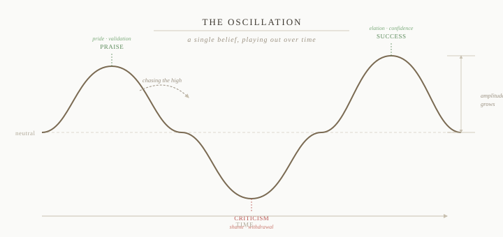
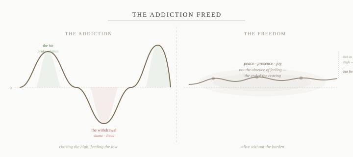

In the last chapter we established the basic chain: events unfold, the mind objectifies them, conditioning judges them, a reaction arises. We looked at the filter from the outside. Now let's go inside it — because the interesting question isn't just that the filter exists. It's what's actually in there, and what it does to you over time.
The filter, at its core, is a collection of beliefs. Not beliefs in the formal sense — you didn't consciously choose them, and you may not even know they're there. They're more like grooves worn into the mind: this kind of thing is good, that kind of thing is dangerous, this trait means you're worthy, that outcome means you've failed. Most were formed early, reinforced often, and now operate automatically, well below the threshold of conscious thought.
What makes them powerful — and what this chapter is really about — is that these beliefs act like charged poles. They don't just label events after the fact. They actively pull experience toward a positive or negative charge before you've had a chance to think. And they set something in motion that, once you see it, is very hard to unsee.
The Charged Pole
Take a belief that many people carry without quite knowing it: that being intelligent or capable is core to who you are and what you're worth. It arrived somewhere in childhood — through praise, through comparison, through the particular way your family assigned value — and it's been reinforced so many times it no longer feels like a belief. It just feels like the truth.
Now watch what that belief does to incoming experience. Someone compliments your thinking — and before you've consciously processed the words, there's a warm lift, a small glow, something that feels like confirmation. Someone questions your logic — and before you've even evaluated whether they have a point, there's a tightening, a readiness to defend, a faint sting. The event itself — neutral words in the air — has snapped to the charged pole. The filter has already done its work.
This is happening across dozens of beliefs, with every piece of experience that arrives, continuously. The mind is not passively receiving the world. It is actively sorting it — pulling events toward existing charges, producing reactions — thousands of times a day, mostly without your awareness.
A note on language: the words used here — "belief," "charge," "pole" — are approximations. They're the closest we can get in language to something that doesn't quite fit into language. The actual thing is more immediate and more total than any description of it. Take the words as pointers, not definitions.
The Side We Don't Examine
We tend to pay a lot of attention to our negative reactions. Anxiety, shame, resentment — these are uncomfortable enough to notice, uncomfortable enough to want to do something about. We have some awareness, at least in principle, that they're connected to something in us rather than just being caused by the outside world.
We pay far less attention to the positive ones. Pride, validation, the warm glow of being praised, the satisfaction of being seen as competent — these feel good, so we don't scrutinize them. We just enjoy them.
But they are equally the filter operating. The pleasure of being praised is just as much a conditioned reaction as the sting of being questioned. Both are the charged pole doing its work. The only difference is that one feels like a problem and the other feels like a reward.
This is where most people stop looking. And it's exactly where the looking gets interesting.
The Crest and the Trough
A charged belief doesn't just produce individual reactions. It sets up an oscillation — a wave that runs through your experience over time. Every hit of positive valence is a crest. Every sting of negative valence is a trough. The crest and the trough are not two separate things. They are fused — irrevocably, mechanically intertwined. You cannot have one without the other. The height of the high is the depth of the low, expressed in the other direction.

When you receive a hit of validation and simply enjoy it — let yourself bask in the praise, ride the wave of feeling good about yourself — you don't just experience the reaction. You strengthen the underlying belief. You've confirmed, at some level below language, that this is real, that this thing is worth protecting. The groove gets a little deeper. The pole gets a little more charged.
Which means the next swing in the other direction will be a little sharper. The sting of criticism will cut a little deeper, because the belief it's threatening has been made a little more load-bearing. The higher the crest, the deeper the inevitable trough. Not as a moral lesson — as an iron consequence of how the system works. The two are bound together. Feed one and you feed both.
And it runs the other way too. Ruminating on a slight, feeding resentment, replaying a failure — these equally deepen the groove. Each visit reinforces the belief that you are vulnerable to this particular kind of harm. And a belief freshly reinforced on the negative side will produce a sharper hit when the positive comes — which will in turn make the next fall harder still.
The Illusion of the High
The natural human instinct — and one that Western culture reinforces constantly — is to organize life around maximizing the crests. Chase success, accumulate praise, engineer circumstances to produce more hits and fewer withdrawals. Life, on this view, is fundamentally about getting more of the good feeling.
But look at what this actually does. Chasing the crest steepens the wave. Every time you succeed in getting the hit, you strengthen the belief that produced it — which means you've also strengthened the source of the pain when things inevitably go the other way. You haven't escaped the trough. You've deepened it, and deferred it.
The highs are not the path. They are the other half of the burden — fused to the lows as surely as the crest is fused to the wave that carries it.
This is genuinely difficult to see clearly, because the hits feel so much like the point. The pride feels like flourishing. The validation feels like evidence that things are going well. From inside the oscillation it looks like success. It takes a certain stillness to notice that you're riding a wave at all — and that with every ride, the wave grows larger.
The Other Option
There is something else available — and it is not what most people imagine when they first hear it described.
The option is not to stop caring, or to detach from life, or to become someone for whom nothing matters. It is not resignation or numbness or philosophical indifference. Those are just a different kind of avoidance — the trough dressed up as wisdom.
The option is to dissolve the belief itself — to loosen, over time, the charge that creates the oscillation in the first place. When the pole loses its charge, events still arrive. Things still happen. Life still has texture and color and weight. But there is nothing for experience to snap to. The wave quiets — not because you've become less alive, but because you've become less enslaved to the story the belief was telling about what events mean about you.

Think of someone who has genuinely freed themselves from an addiction. They are not high. The hit they used to chase is gone, and they know it. But something has taken its place that no amount of chasing ever produced — a steadiness, a quiet aliveness, a freedom from the constant pull. Not the top of the wave. Something that doesn't require the wave at all.
Remove the addiction and you remove the burden. Both at once — because they were always the same thing. The hit and the withdrawal were never opposites. They were a single package, and the only way out is to stop reaching for the package entirely.
This is harder to do than to describe, and we'll spend significant time on it later. But it helps to see it clearly now, before we go further, because it reframes everything that follows. The goal isn't to get better at managing the wave. It isn't to accumulate more crests. It's to understand what generates the wave — and eventually, to stop feeding it.
What This Builds Toward
Run this process for long enough — years, decades, a lifetime — and something larger emerges than just stronger reactions. The accumulated weight of all these reinforced beliefs starts to define the entire world you're capable of inhabiting. What you can hear. What you can receive. What kind of experiences you keep gravitating toward, and which ones remain structurally invisible to you.
You haven't just developed habits. You've built a world. A self-reinforcing reality, constructed from thousands of small reactions that each, at the time, seemed like simply responding to what was happening.
That's what we'll look at in the Realms. But first — it's worth understanding why the filter has the particular shape it does. Why these beliefs and not others? Why is the filter so consistently organized around standing, status, and how we compare to others?
The answer goes back much further than you might expect.